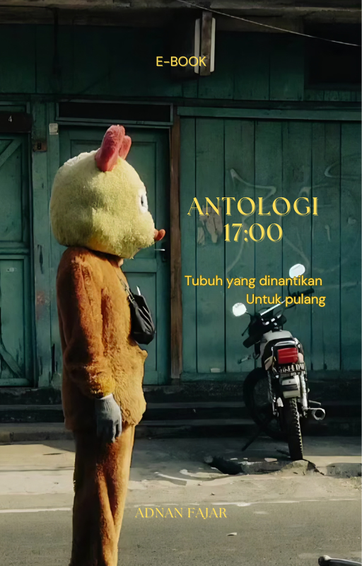

"Singgah dengan makna yang butuh waktu"
"Negeri Intuisi" bukanlah tempat yang bisa kau temukan dalam peta dunia. Ia adalah sebuah ruang imajiner yang dibangun di dalam diri, sebuah singgasana tanpa peperangan, tempat di mana kita mencoba berdamai dengan riuh di kepala sendiri.
Lewat kumpulan narasi, puisi, dan dialog filosofis, buku ini merekam jejak perjalanan manusia dewasa yang lelah. Tentang rindu akan "pulang" ke rumah yang tak sekadar bangunan, dan perdebatan sengit antara logika yang berteriak dan intuisi yang berbisik.

"Tubuh yang dinantikan untuk pulang."
Sebuah kumpulan puisi yang merekam jejak senja, lelahnya perjalanan, dan kerinduan akan rumah yang sesungguhnya.